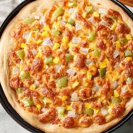

| 
|
Wild Mushroom PizzaIngredients
1 package (1/4 ounce) active dry yeast
3/4 cup warm water (110° to 115°)
1 teaspoon olive oil
1/2 teaspoon sugar
1/2 cup whole wheat flour
1/2 teaspoon salt
1-1/2 cups all-purpose flour
TOPPINGS:
2 teaspoons olive oil, divided
1 pound sliced fresh wild mushrooms
1/4 cup chopped shallot
4 garlic cloves, minced
2 ounces cream cheese, softened
1-1/2 teaspoons salt
6 fresh thyme sprigs, stems removed
1/2 cup shredded Gruyere cheese
1/4 cup shredded Parmesan cheese
Fresh basil, optional
Directions
In a bowl, dissolve yeast in warm water. Add oil and sugar; mix well. Combine whole wheat flour and salt; stir into yeast mixture until smooth.
Stir in enough all-purpose flour to form a soft dough.
Turn onto a floured surface; knead until smooth and elastic, about 6-8 minutes. Place in a bowl coated with cooking spray, turning once to coat top.
Cover and let rise in a warm place until doubled, about 1-1/2 hours. Preheat oven to 425°.
Punch down dough; press onto a 12-in. pizza pan coated with cooking spray. Prick dough several times with a fork. Bake until edges are light golden brown, 10-12 minutes.
Meanwhile, in a large skillet, heat 1 teaspoon oil over medium-high heat; saute mushrooms in a single layer, in batches, until golden brown, about 8 minutes. Add onion and garlic; cook until onion is tender.
In a food processor, process half of sauteed mushrooms with cream cheese, remaining olive oil, and salt. Spread on crust. Top with remaining mushroom mixture, cheeses and thyme. Bake until crust is golden brown and cheese is melted, 12-14 minutes. If desired, garnish with additional fresh thyme and basil.
|